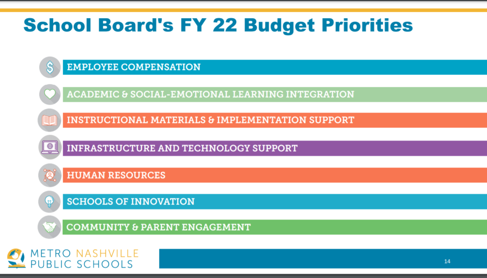
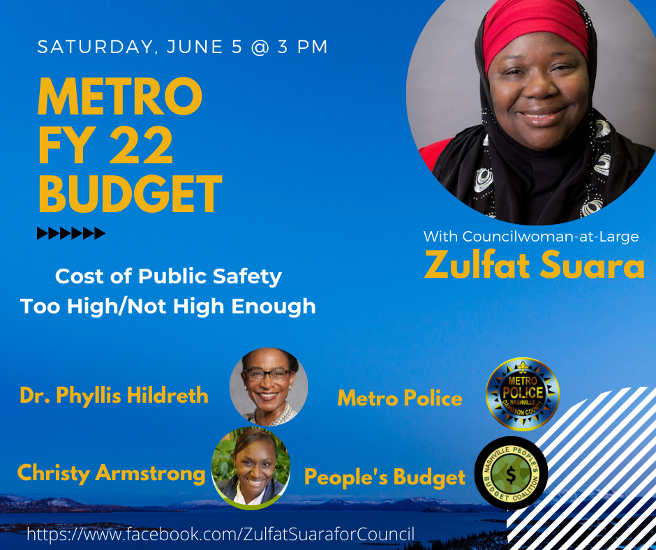

Budget Conversations: Investing in OUR Children
Last week’s budget conversation was focused on an issue of great importance to me: our children. For the first time ever, Metro Nashville Public Schools (MNPS) has a proposed budget that exceeds the $1 billion mark. That’s right, $1 billion. I was excited when the mayor announced at the state of metro that his proposed budget fully funds our schools. As someone who ran on fully funding our school, regardless of the zipcode, this is very important to me. The best thing we can give our children is education. My dad always says your education is the one thing that is truly yours and no one can take away from you. A statement I can attest to as someone who had an accounting degree in Africa and later became a CPA in the US.
Joined by MNPS Budget Chair Freda Player-Peters, MNEA President Amanda Kail, Budget Vice-Chair Rachael Anne Elrod, we took a deeper look into the budget as it pertains to funding our schools in FY22. Below are some key points from our conversation.
What exactly does this budget fund?
While $1 billion may seem like a lot (and, it certainly is), the school system has been in desperate need of investment for many years. You can be sure that not a single penny will be wasted. Below are the main differences between the FY21 and FY 22 budgets
- $67.4 million increase in employee compensation, with a little over $44 million of it working toward teacher compensation specifically.
- $2.5 million dollars toward creating Advocacy Centers to support social and emotional learning (SEL) in our elementary schools, as well as SEL initiatives in middle and high schools.
- $2 million in inflationary increases.
- $15 million toward paying the enrollment and per-pupil increase at our 27 charter schools.
- Additional charges from Metro Nashville.
To see a more detailed breakdown of the proposed MNPS budget, follow this LINK.
BUDGET PRIORITY #1 : COMPENSATION
The greatest accomplishment of the increased budget is that we are finally able to pay teachers the salary that they deserve. For a long time, Nashville was 17th best paid district in Tennessee, and Tennessee itself ranked 43rd in the nation for teacher pay. Not a great statistic. Such poor compensation resulted in highly qualified teachers fleeing to other neighboring districts, resulting in empty classrooms for our children. Consequently, the additional funds being funneled into labor compensation ensure that our schools have a certified teacher in every classroom. It means that the employees of one of the largest employer in Nashville want to keep their jobs. And, it means that we could have the best paid teachers in the state.

BUDGET PRIORITY #2: ADVOCACY CENTER AND SOCIAL EMOTIONAL LEARNING (SEL)
The second most important initiative is an improved focus on SEL, especially at the elementary school level. In reality, “teachers are trained at the level of first aid” when it comes to dealing with behavioral issues. They can handle brief outbursts and offer varying degrees of emotional support, but are not equipped to handle issues that require more intensive care because it takes away class time from all the other students. An introduction of Advocacy Centers makes sure that there is a dedicated space and dedicated personnel to address some of the more deep-rooted SEL objectives without disrupting normal classroom functions.
It is important to note that the introduction of Advocacy Centers will be completed in phases. The $2.5 million allotment only covers the first phase of this long-term investment in our children and our community, but there is more to come. The timing of the installation is informed by an equity lens and aims to lend support where there are the most instructional interruptions, for those areas typically need special trauma-informed restorative practices.
Subsequent to the budget conversations, I learnt that the $2.5Million coupled with federal dollars will only fund 55 of the 72 of the advocacy centers. This will leave 17 elementary school without one. I am proud to join the minority caucus in adding an additional $1.2 million to our budget wishlist. If approved, the $1.2 million will ensure there is an advocacy center in every elementary school. This does not fund all MNPS SEL need, but it is a start.
Questions
WHY CANT THE $2 BILLION BUDGTE COVER EVERDAY SCHOOL SUPPLIES?
According to budget chair- Player-Petters, MNPS is a network made up of 160 schools with 5 or 6 grade levels in each school. The school could easily spend $5 million on school supplies alone due to the sheer volume of material needed for that many children. All panelist lamented that MNPS is an extremely low-tax-funded state with no income tax and comparatively low property tax, meaning that there is not enough resources to supply everything that the board wants. Unfortunately, school supplies are one of the expenses that gets cut when funds are low.
The question highlights the disparities that exist in our families and our schools. The fact is that some families do struggle to buy the extra supplies for their children. The good news is that there are many non-profit organizations that exist in our city to help out families and teachers in need of low-cost school supplies. One of my personal favorites is the PENCIL FOUNDATION. PENCIL does a great job providing resources to teachers who need it and I highly recommend that everyone who is able to invests in our community by donating to the organization.
ANY DEDICATED FUNIDNG IN THE CURRENT BUDGET FOR SEL IN MIDDLE & HIGH SCHOOLS?
MNPS goal is to build regulatory skills as early as possible so that there are less recurring issues as students progress throughout their academic careers. As a result, most of the focus falls on the elementary school Advocacy Centers. However, the board recognizes that SEL needs do not end after elementary school. Therefore, $2 million is going toward funding restorative practice assistants in middle school. Much of this funding is coming from one-time dollars via the CARES act (ESSER) and thus doesn’t appear on the budget as is. Hopefully, a more stable funding source will be developed to support other alternative learning centers. Below are some of the aspirational asks that are not fully funded by the $2.5 million budget increase:
HOW WILL THIS BUDGET INCREASE IMPACT STUDENT ACHIEVEMENT?
By investing in our people (i.e. the teachers, administrators, SEL mentors) we are investing in our student achievement as well. Our schools are not just empty buildings, but rather places of education and interaction. Ultimately, improving the quality of our people will improve the quality of academic performance as well. The board also aim to prioritize school-led development as the principals and teachers know what their students need the most.
IS MNPS TOP HEAVY?
This is a very common concern, however, Nashville has fewer support employees than its sister cities, and these support employees are often paid less. Sadly, people often don’t realize how much these individuals actually do and how much they are involved in our school system. For example, support staff help design curriculum under state guidelines while the teachers are busy in the classroom. It is also important to note that that anyone not directly attached to a school is also included in “central office” staff, including maintenance workers. Lastly, central office received a budget cut of $1 million last year already.
Overall, people always look for something to cut away to save money. If anything, the thing that can be done is redirect their efforts, not shave them away entirely. While MNPS may not be top-heavy, it might be time for some structural readjustment.
HOW IS DIVERSITY IN MNPS?
MNPS is working toward diversity measures every day. However this is tougher than it seems. In reality, everyone is looking for a black male teacher, so MNPS must improve its intentionality with staff recruitment. Providing better benefits, like increased pay, is one method through which MNPS can pursue diversity in our schools.
ARE STUDENTS WITH DISABILITIES BEING CONSIDERED IN THE DESIGN OF SEL ADDITIONS?
The short answer is yes! MNPS kept students with disabilities in the conversation on the board floor to ensure that all students get to benefit from the $2.5 million investment in SEL. The transition back to in-person instruction is going to be very difficult for many of our students due to increased sensory input, the goal is to equip the Advocacy Centers to handle that change, in addition to the normal services our students with disabilities receive on a day-to-day basis.
WHAT IS GOING ON WITH 7 UNPAID DAYS FOR SUPPORT STAFF?
MNPS aspirational budget includes a 7 day additional payment for support staff. These days represent 7 days out of the school year that teachers are paid for in school service or training. Currently all support staff (10 month staff) are not paid for these days. MNPS recognizes the importance of having training for support staff and included the cost of these additional days ($1.4 million) in it’s budget request.
The metro minority caucus have also included this item in our wish list. As the minority caucus budget chair, I presented this request along with other items on behalf of the minority caucus at council budget work sessions. You can watch the video of the budget hearings here.
Looking Ahead-
The COVID-19 pandemic impacted us all, especially those involved with MNPS. The hope is that as things go back to normal, MNPS will be able to use the mayor’s increased budget to create real, meaningful change for our children. Here are some of the things our panelists were hopeful for in the upcoming school year:
- National guidance and vaccination plans permitting students to return to an in-person format that is comfortable and safe for all.
- Certified teachers in every classroom.
- Additional SEL supports to account for adjustment back to the classroom and everything that has happened over the past year.
- The visibility of our one-time ESSER dollars via wise, impactful investments from the previous year.
- New implementation of things we didn’t know were possible, like the 1:1 technology initiatives that have grown so much recently.
If you missed last week’s Budget Conversation with MNPS Budget Chair- Freeda Player-Peters, MNEA President Amanda Kail and Budget Vice Chair- Rachael Anne Elrod, you can watch the entire episode at the link below.
Next Budget Conversation
Some residents want more police while others believe increasing police is not the answer. Join Dr. Phyllis Hildreth, Ms. Christy Armstrong, Deputy Chief Chris Taylor, Mr. Michael Randolph with MHC and Theeda Murphy and Andrew Krinks with the Nashville People’s Budget Coalition today at 3pm as we discuss the Cost of Public Safety. Is it too high or not high enough? Please join us on Facebook live with your comments and questions at https://www.facebook.com/ZulfatSuaraforCouncil/

As always, if you have any questions or concerns, please feel free to reach out to me. I am very passionate about our schools and would love to talk about it with any of you. I look forward to our next Budget Conversation regarding funding our police force.